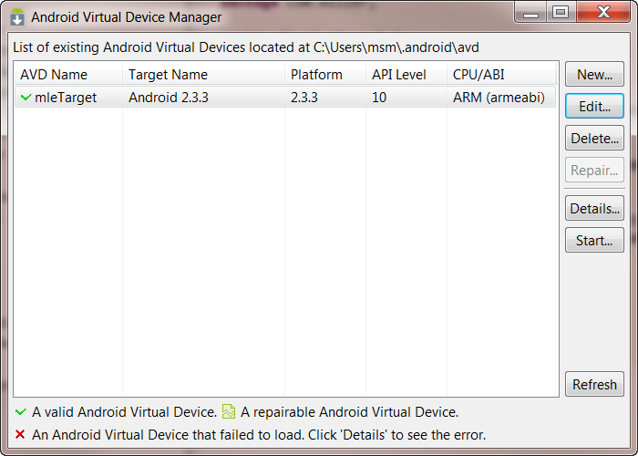
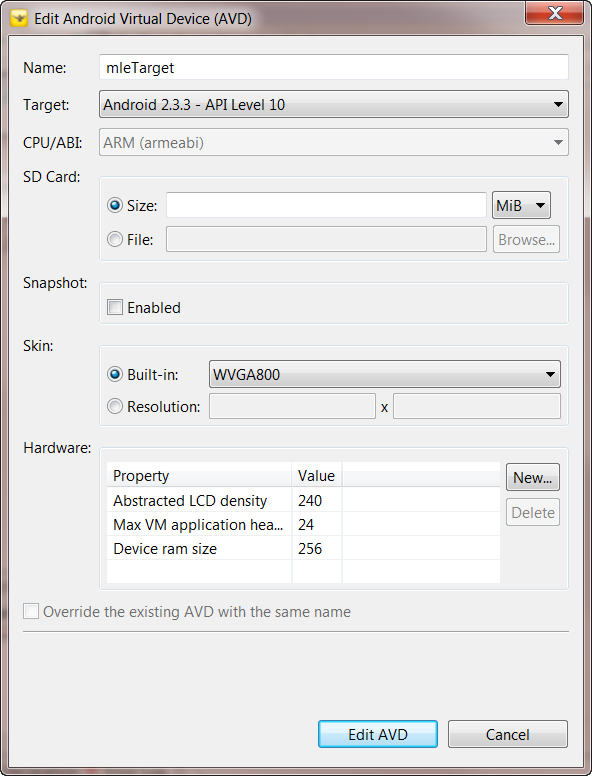

This document instructs how to manage the Android SDK. It describes how to download and install the Androied SDK as well as register the SDK with Magic Lantern Studio. This documentation also shows how to create an Android virtual device for testing your Magic Lantern Android title.
The Google Andorid SDK is not distributed with the Magic Lantern Android Studio. You must download and install the SDK Components from Google. The Magic Lantern Android Studio has been developed and tested with revision r16 of the Android SDK. This does not mean that the Magic Lantern Studio and Magic Lantern SDK will only work with this revision. It just indicates that r16 is the only distribution that has been tested so far.
Please download and install one of the two r16 Windows platforms specified on the Android Developers web site. The following table lists the Android SDK packages that are officially supported by Magic Lantern.
| Package | Comments |
|---|---|
| installer_r16-windows.exe | Recommended |
| android-sdk_r16-windows.zip | If the Windows installer doesn't work for you. |
The instructions for installing the Android SDK can be found on the Android Developers installation web page.
Note: You do not need to install Eclipse or the ADT Plugin for Eclipse. Eclipse and the Google ADT Plugin are already part of the Magic Lantern Android Studio product. The Magic Lantern Android Studio uses the ADT 16.0.0 Plugin released in December 2011.
The Magic Lantern SDK is currently built for the Android 2.3.3 platform. Make sure to download and install the SDK Platform Android 2.3.3, API 10 using the Andorid SDK and AVD Manager tool in Step 4.
The Android SDK may need to be registered with Magic Lantern. This is done by modifying the ADT preferences in Eclipse to point to the Android SDK directory:
You use the Android AVD Manager to create a virtual device. The Google Android Developers documentation, Managing AVDs with AVD Manager, explains how to create and manage an AVD using the Manager.
Figure xxx shows a virtual device created for testing the Magic Lantern Sample projects.

Figure 1.1: Magic Lantern Android Target
The mleTarget device was configured with the parameters displayed in Figure xxx.

Figure 1.1: Magic Lantern Android Target Configuration